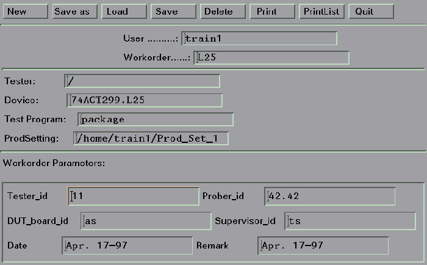
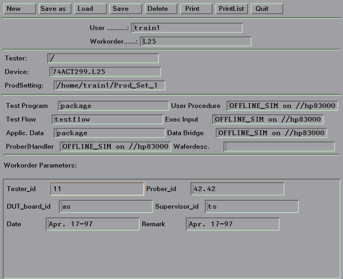

Displaying the Test Program Components
Should you desire, you can have an extra area of your workorder manager screen that tells you the components of your Test Program. Compare the screens shown below. The second figure gives you information on what the individual components of the Test Program package are.


To display the Test Program components in the workorder manager screens do one of the following:
- Open a terminal window and type
set SHOW_PROG_COMPONENTS=ON
export SHOW_PROG_COMPONENTS
and then start SmarTest
- Include the lines
set SHOW_PROG_COMPONENTS=ON
export SHOW_PROG_COMPONENTS
in the user's .vueprofile, login again, and then start SmarTest.
Note By default, SHOW_PROG_COMPONENTS is off.